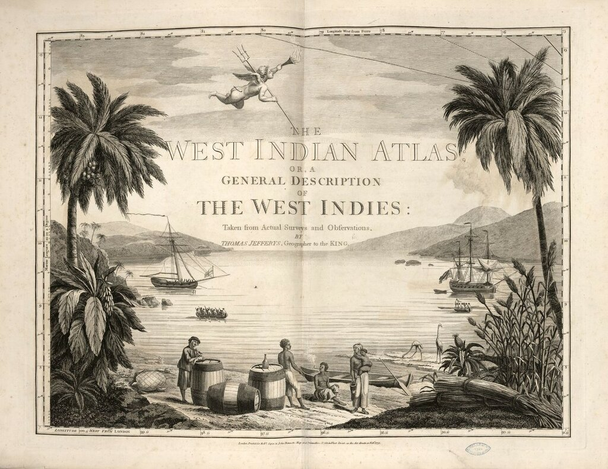
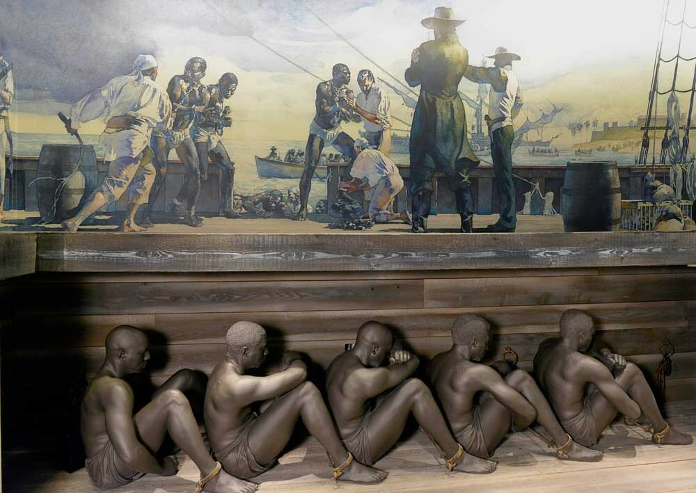

Капитаны невольничьих судов
― Не помню, где я читал, ― продолжал Павел Петрович, ― что известный поэт Рембо впоследствии стал спекулятором, даже, кажется, работорговцем, и больше уже ничего не писал.
В. А. Каверин. Открытая книга
Обратимся теперь к особой категории морских капитанов – к капитанам кораблей, перевозивших рабов. Это были не маргинальные деятели с криминальными задатками, как их иногда изображают, а уважаемые и влиятельные в морском сообществе того времени люди.
Англия являлась ведущей державой мира по трансатлантической транспортировеке рабов. Из шести миллионов африканцев, насильно перемещенных через океан в восемнадцатом веке (а именно этот период нас сейчас интересует) около двух с половиной миллионов, или более 40 процентов, приходится на долю Британии. Она оставила далеко позади своих ближайших конкурентов – португальцев (ок.1,9 млн.) и французов (1,1 млн.).
[Для справки можем отметить, что за три с половиной века работорговли – с 1519 по 1867 г. - из Африки было вывезено около 11 миллионов человек, из которых 9,6 млн. были ввезены в Америку].
Изданный в 1796 году Атлас Вест-Индии (Thomas Jefferys, The West Indian Atlas; or, A General Description of the West Indies)

отмечает, что в конце восемнадцатого века ежегодно из Африки в Вест-Индию вывозили около 72 тысяч рабов, из которых датчане перевезли около 3000 человек, голландцы – ок. 7000, французы – 18 тыс., португальцы – 8000, а всех остальных переместили на своих кораблях англичане. Рабовладельческой столицей мира стал Ливерпуль (из порта каждый год выходило более восьмидесяти кораблей работорговцев), оставивший далеко позади Бристоль и Лондон (по 36 кораблей в год). Еще заметней эта разница будет выглядеть, если в расчет брать общий тоннаж судов, перевозивших рабов (11 633 тонн (Ливерпуль) по сравнению с 2 910 (Лондон) и 2 730 (Бристоль))

Невольничий корабль - National Civil Rights Museum, США
.
К капитанам судов, перевозивших рабов, предъявлялись особые требования: Вот как описывают их авторы статьи «Being Bad by Being Good»:
Капитан должен быть человеком разносторонним (a man of parts). Он должен быть сердцем и душой всей экспедиции, и помимо других качеств, необходимых капитану, уметь вести переговоры о цене на рабов с африканскими купцами и королями, стойко переносить климат Западной Африки, штормы и штили, неизбежные потери во время путешествия. Требуется изощренный ум, чтобы найти общий язык с разношерстным экипажем, который может дезертировать с корабля в любом порту. Капитан невольничьего судна должен быть готовым мужественно и хладнокровно противостоять возможным бунтам рабов.
John Dalton and Tin Cheuk Leung. Being Bad by Being Good. Owner and Captain Value-Added in the Slave Trade, 2015
От квалификации и способностей капитана во многом зависел успех, а значит и доход, всей операции. Задачи, которые получал на поход капитан невольничьего судна, можно оценить, прочитав его контракт с компанией. Так, суммировав все обязанности капитана, приведенные в контракте (Asiento contract of 1667) голландской работорговой компании Middelburgsche Commercie Compagnie (MCC) (приведен в интересной книге Postma, Johannes Menne , The Dutch in the Atlantic Slave Trade, 1600-1815), получим:
капитан должен
1) подготовить корабль для плавания к берегам Африки и безотлагательно отплыть туда;
2) закупить рабов высокого качества;
3) не допустить бунта среди рабов;
4) препятствовать злоупотреблениям членов экипажа по отношению к рабам;
5) вместе с доктором следить за здоровьем рабов
6) выжигая клеймо на теле раба, следить, чтобы повреждения его тела при этом были минимальными.
Отметим особую роль, которая при выполнении обязанностей капитана невольничьего судна отводилась корабельному доктору. В известном документе британского парламента, так называемом Акте о работорговле 1788 года (его еще называют по имени инициатора Акт Долбена), который потребовал обязательное присутствие доктора на борту судна для перевозки рабов, содержится норма, позволяющая назначать на должность капитана корабельного доктора. К слову, в Акте введена жесткая норма количества рабов в зависимости от водоизмещения судна: 1,67 человек на тонну для кораблей водоизмещением до 207 тонн и не выше 1 человека на тонну для судов большей грузоподъемности.
План невольничьего судна «Брукс» (водоизмещение 267 тонн), на котором по Акту Долбена размещены 454 раба. До этого судно перевозило 609 рабов, или по 2,3 раба на тонну (кликабельно).
Чтобы справиться со всеми трудностями похода, капитан невольничьего судна, как правило, нанимал на борт больше моряков, чем на обычный коммерческий рейс. Так, если типичный торговый корабль, идущий в Вест-Индию (West Indiaman) водоизмещением 250-300 тонн имел , помимо капитана, одного-двух помощников, корабельного плотника или бондаря (купера), кока и 15-20 матросов, то на такой же корабль, назначенный для перевозки рабов, требовалось нанять дополнительно человек 20 для ведения торговых операций на берегу (там, где не было факторий), охраны невольников и содержания их на борту.
Отметим еще одну особенность экипажей невольничьих судов. Это высокая смертность моряков. В восемнадцатом веке она достигала 17,9 процентов, что было существенно выше смертности среди перевозимых на этих кораблях рабов (12,3 процента).
Продолжим в следующий раз.